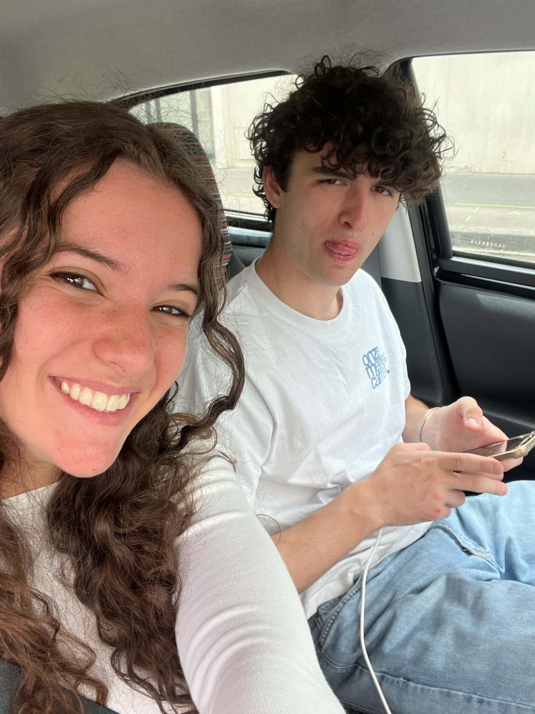
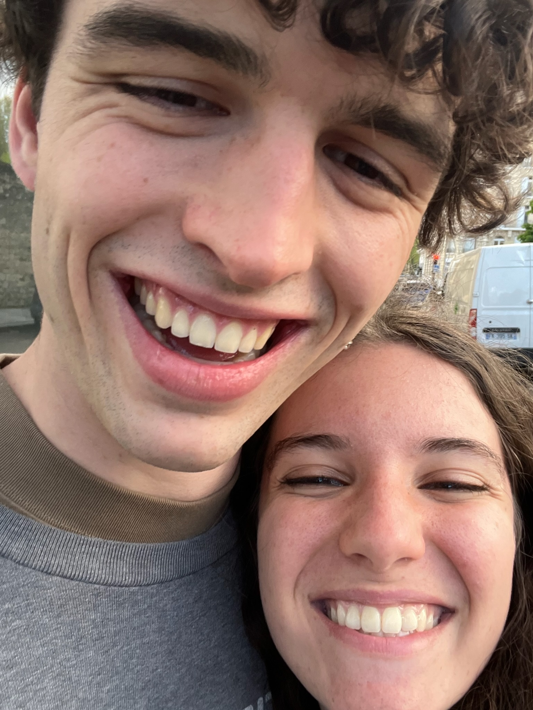
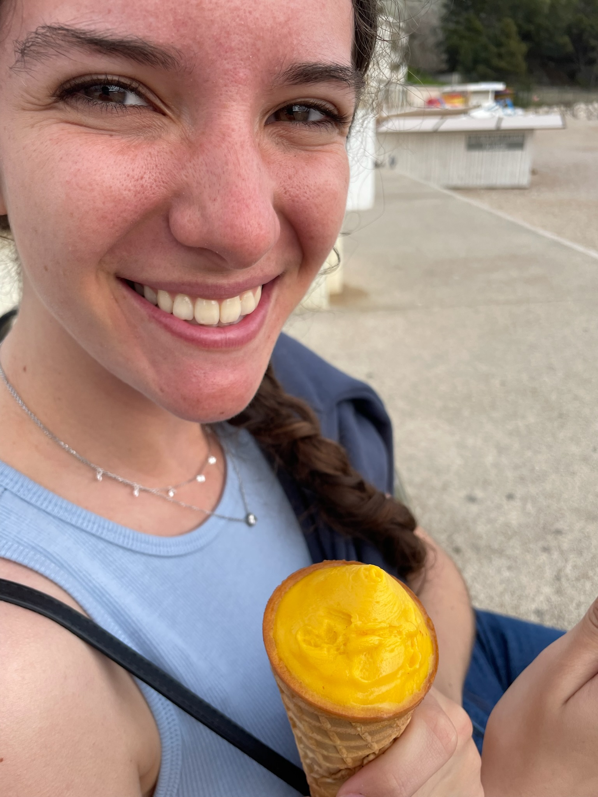
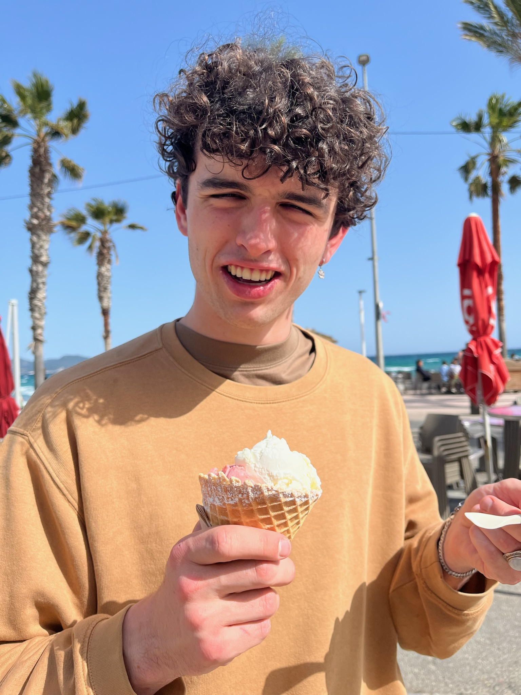
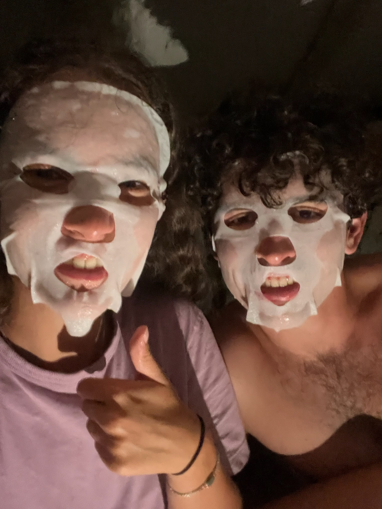
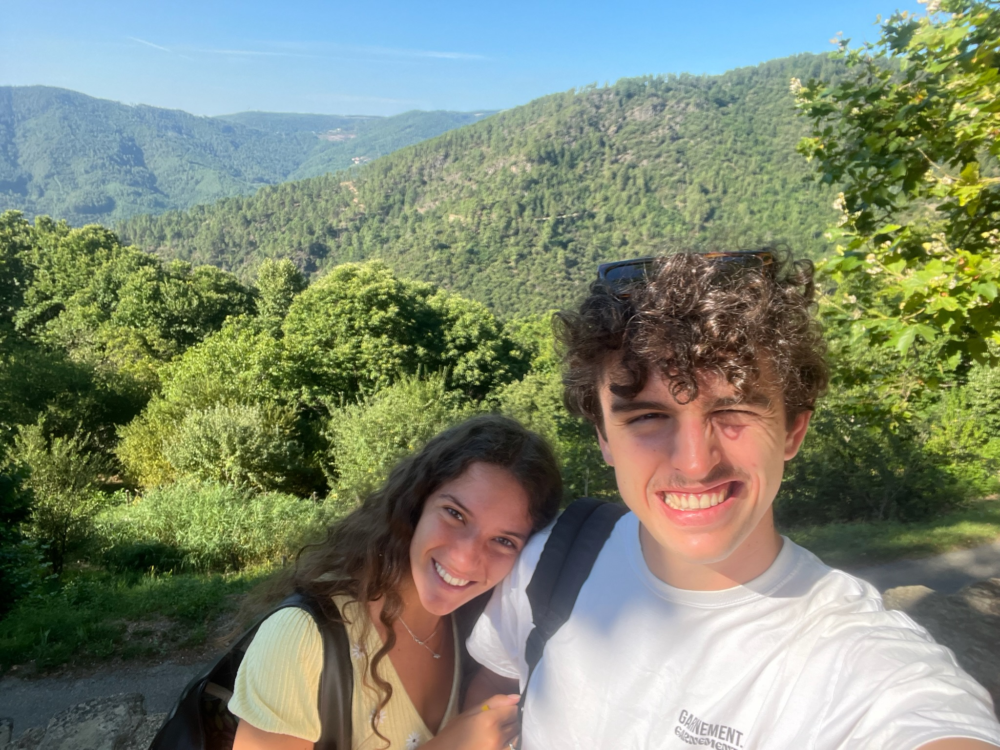
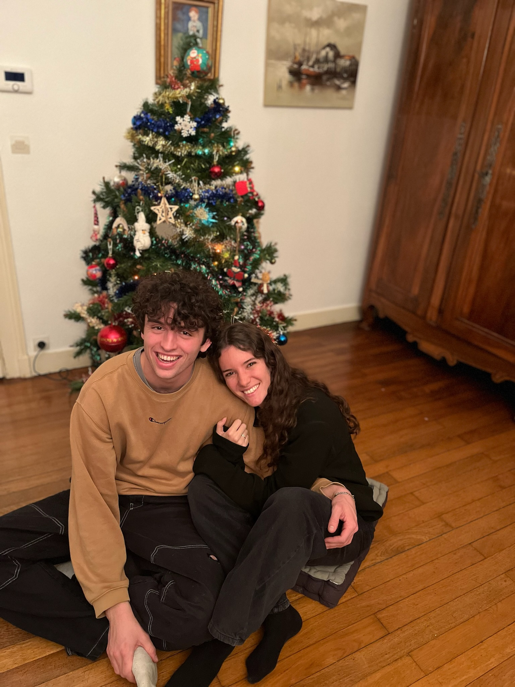
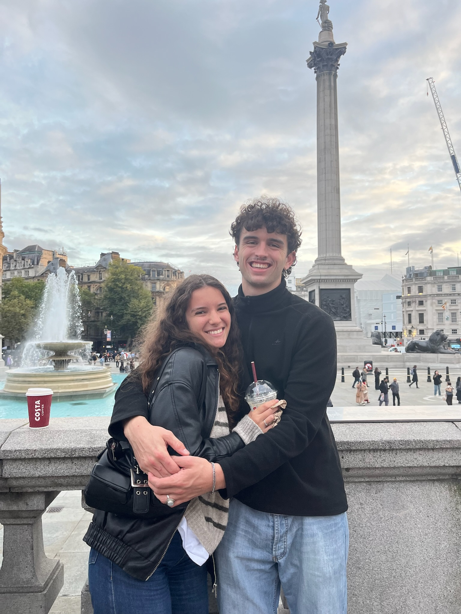
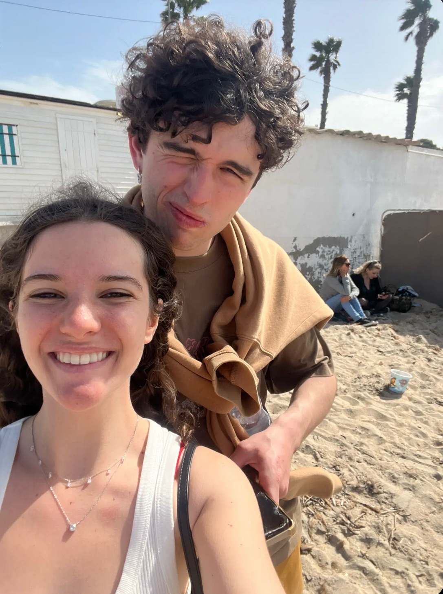
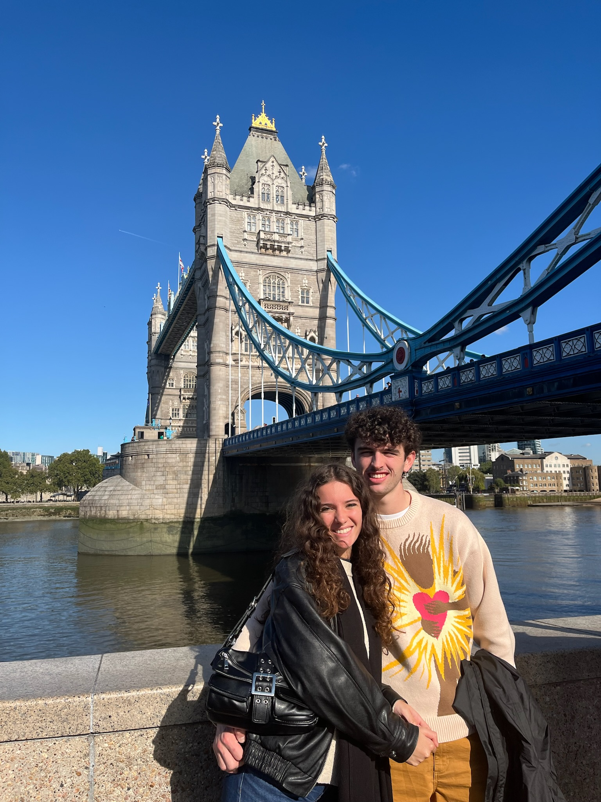

Grégor et Marion. Qu’ils sont beaux prénoms ensembles, mais surtout quelle belle relation on a. Tu as été le premier à voir ce qu’on avait de si spécial, de si différent des autres. Tu as été le premier à croire en nous, à te battre pour nous. Tu avais raison. Tellement raison. Et, aujourd’hui, je veux te remercier d’avoir tout fait pour nous, même quand ça semblait cause perdue. Maintenant, je sais qu’on ira loin. Je sais que Grégor et Marion ce n’est pas une histoire dans le vent. C’est justement pour ça que je veux retranscrire le plus de souvenirs qu’on a passé ensemble possibles. J’aurai sans doute besoin de ton aide, même si ta mémoire est assez défaillante…
Je me souviens d’une des premières fois où ta présence m’a vraiment marqué. Bon, l’anecdote est assez cocasse maintenant mais c’était au gala de parrainage. Quand Axel et Eva s’étaient embrassés et que je me sentais trahie, tu as été l’un des plus présents pour moi sur le coup. On ne se connaissait pas beaucoup, et tu étais plus proche d’Axel que de moi à cette époque j’avais l’impression. J’ai été beaucoup touchée par tes gestes et tes paroles. On est ensuite rentrés en uber ensemble. A partir de là, on a commencé à se parler plus souvent, bien que ça restait assez superficiel et en surface.
Je me souviens comme tu me supportais toujours dès le début de notre liste BDE, et on avait une lutte commune : autoriser le pôle aide. On discutait alors pas mal pendant les réunions. Tu vérifiais que ça allait par rapport à Axel. Tu étais toi quoi. Toujours aussi gentil. Toujours aussi bienveillant. Toujours aussi attentionné. En réalité, sans vraiment savoir pourquoi, ça m’a toujours rassuré de t’avoir dans la liste avec moi. Même de loin, j’ai toujours porté beaucoup de respect envers ta personne. Tu étais aussi l’un de ceux qui me poussait toujours à faire entendre ma voix, à candidater pour Vice-Prez etc. Enfin bon, dès la pré-campagne, je me rendais compte de la potentielle amitié qu’on pouvait avoir.

Je me souviens du MIG à Sophia. Je me souviens qu’on n’était toujours pas les plus copains mais c’était déjà beaucoup plus fluide. Je me souviens de tes goûts douteux pour les musiques de chorée. Je me souviens de parties d’undercover avec toi. Je me souviens surtout de ce matin-là quand je vous ai vu dans le bus et que je me suis avachie sur le siège, désemparée car je voulais écouter ma musique, mais que vous voir ici allait nécessiter que je vous parle. Avec le recul, je rigolerai toujours de cette scène.
Je me souviens de notre première longue discussion tous les deux. C’était avant Noël, après une réunion de liste. Il devait être une heure du matin, et je ne sais pas pourquoi mais je me suis dis c’est le moment. C’est le moment de discuter, nous qui avions dit un nombre de fois incalculable qu’il fallait qu’on se raconte nos vies. Et voilà, on s’est retrouvés assis sur les bancs d’en bas pendant deux heures, à se raconter nos histoires, à rigoler ensemble. Je me souviens ne pas avoir vu le temps passé. Je me souviens que je ne cherchais jamais un nouveau sujet de discussion. Je me souviens avoir passé un très bon moment avec toi.
Je me souviens t’avoir envoyé des messages sur insta pendant les vacances de Noël. C’était assez étonnant d’ailleurs car on n’avait jamais parlé de loin. Je ne sais pas pourquoi mon esprit avait pensé à toi, mais c’était sympa.

Je me souviens du retour à Paris. Je me souviens qu’il fallait choisir notre équipe de parrainage. Je n’étais pas super copine avec tous les garçons de la liste, du moins pas assez pour passer des heures qu’avec un haha. Alors quand j’ai vu que François et Alban étaient déjà pris, tu as tout de suite paru être la solution évidente. Je ne savais pas trop comment ça allait se passer, peut-être que ça allait être gênant : je n’en savais rien, mais j’avais envie de tester. De passer un cap pour notre amitié. Je me souviens comme tu avais répondu de manière enthousiaste à la proposition, me confortant dans ma demande. Je me souviens que tu étais en retard, pour pas changer, et quand je pense que tu es enfin là tu décides d’aller faire pipi avec ton extrême lenteur. Alors, je me souviens être partie sans toi. Je me souviens de tous les instants de cette journée, comment je te laissais parler dès que je pouvais, comment on est allés démarcher des boutiques totalement inutiles, comment on rigolait, comment on était hypés par le bowling. Je me souviens aussi de la viennoise au chocolat qu’on a pris, et qui était vraiment exquise. Je me souviens comme on a oublié de donner nos contacts et boutiques à Liam. Je me souviens avoir vraiment passée un bon moment avec toi.
Je me souviens de la soirée de Montparnasse. Je me souviens comme on se cherchait avant de partir là-bas, à critiquer nos tenues respectives, alors que tu me considérais juste trop fraiches :p. Je me souviens que tu m’as fait une déclaration ce soir-là, et qu’on s’est fait un de nos premiers câlins. Je me souviens qu’on a passé beaucoup de temps ensemble ce soir-là, surtout vers la fin. On était un peu à l’écart de la piste de danse, avec Madeleine et d’autres gens qui changeaient. On rigolait, on dansait. Jusqu’à ce que tu nous fasses je ne sais quel mouvement et te retrouve au sol. Qu’est-ce que j’ai ri, et qu’est-ce que je rigole encore en repensant à cette chute. Je me souviens t’avoir pris à l’écart pour essayer de te trouver de la glace, mais rien à faire. Je me souviens que tu disais qu’il n’y avait rien et que tu allais danser. Je me souviens aussi que 10 minutes après tu es revenu me voir pour me dire que tu rentrais car tu avais trop mal. Je me souviens que deux heures après que tu sois parti, je suis allée chercher mon téléphone et je t’ai appelé sur un coup de tête pour vérifier que tu étais bien rentré et que tu allais bien. Je me souviens m’être dit que c’était bête de faire ça et que tu dormais sans doute. Pourtant, je me souviens avoir entendu ta voix à travers le téléphone et avoir été rassurée. Je me souviens m’être fait la réflexion après la soirée qu’il y avait peut-être quelque chose de différent de ton côté. Mais, je me souviens aussi avoir rêvé de toi quelques nuits après. Alors, je pense qu’en réalité, cette soirée a aussi été celle où la possibilité est apparue de mon côté.


Je me souviens qu’après ça, on a commencé à parler par message, même si c’était assez léger. Je me souviens te parler de mes problèmes de cheville. Je me souviens déjà m’inquiéter pour ton genou. Je me souviens t’apporter des patchs anti-douleur, mais que tu avais trop peur de les mettre et que ton genou se casse sans que tu le sentes.
Je me souviens d’une réunion du pôle interne en 322. Je me souviens que tu es resté pendant la réunion. Je me souviens que tu critiquais toutes les idées que je donnais, alors qu’elles étaient clairement incroyables. Je me souviens qu’on a commencé à s’envoyer des photos l’un de l’autre à partir de ce moment-là. Je me souviens qu’on a plus parlé la réunion à s’envoyer des messages ou se chercher que moi à participer.
Je me souviens que quelques jours après, on partait pour le WEL. Je me souviens que tu étais derrière moi pour la chorée de liste, car je danse bien évidemment mieux. Je me souviens qu’on se cherchait énormément. Je me souviens du froid qu’il y avait. Alors, je me souviens de l’élaboration de notre check de réchauffement, qui te permettait aussi d’avoir un câlin en même temps. Je me souviens qu’on se courait après partout dans la maison, comme deux enfants. Je me souviens que pendant le film, on se moquait toujours du rôle de l’autre. Je me souviens quand tu faisais le méchant qui suivait Hannah et que pendant l’installation, on était juste tous les deux dans la chambre à se taquiner. Je me souviens te regarder pendant toute la scène. Je me souviens qu’on faisait tout pour se retrouver tous les deux. Je me souviens avoir adoré la scène du donut sucré au sucre pour t’embêter. Je me souviens du soir où je voulais prendre une photo avec Alban et que tu as préféré me cracher dessus de l’autre pour pouvoir me récupérer. Je me souviens du moment où on s’est retrouvé assis par terre dans la cuisine, l’un en face de l’autre, et qu’on se tenait la main. Je me souviens que Madeleine m’avait dit que pendant une soirée vous disiez avec Campos que j’étais jolie. Je me souviens du moment où je te cherchais en soirée donc je vous ai rejoint dehors, Antoine et toi, mais que j’interrompais en réalité une discussion sur moi. Je me souviens alors comme tu disais être gêné parce que tu faisais le Pikachu. Je me souviens t’avoir envoyé des messages directement en partant, et discuter avec toi pendant le trajet de retour.


Je me souviens comme on est devenus inséparables après ce week-end. Je me souviens du jour où on a fait un jeu de carte après les cours dans ma chambre, pendant plusieurs heures. Je vous avais d’abord proposé de venir avec Liam, on avait mangé des madeleines au nutella. Puis, je me souviens que Liam avait prétexté devoir travailler pour nous laissais tous les deux. Je me souviens que je perdais beaucoup au jeu, mais que je ne me laissais pas abattre et que ça te donnait encore plus envie de jouer. Je me souviens que nos mains se frôlaient parfois. Je me souviens aussi de tous les rires qu’on a eu, de tous les regards qu’on a échangés. Je me souviens qu’en tant que perdante, je devais te faire un repas, mais que j’avais réussi à t’arnaquer en te disant de faire un gâteau avec moi plutôt.
Je me souviens qu’on était en période de révisions de partiels. Je me souviens qu’on était assis l’un en face de l’autre à la bibliothèque. Je me souviens comme on se cherchait tout le temps. Je me souviens comme tu prenais des photos de moi pour m’embêter, et que je me vengeais donc. Je me souviens que nos jambes étaient entremêlées sous la table. Je me souviens nos genoux se frôlaient parfois. Je me souviens de la tension qu’il y avait dans nos regards parfois.
Je me souviens du dimanche qui suivait. Je me souviens que j’étais revenue plus tôt pour faire le fameux gâteau avec toi. Je me souviens avoir appeler Anna en facetime, de manière impulsive, alors qu’elle savait pertinemment qui tu étais, et que ça voulait déjà dire beaucoup. Je me souviens comme notre gâteau faisait peur. À la suite de ça, on a commencé à réviser des cours, la physique statistique je crois. On faisait des sujets à côté. Puis, Louise nous a rejoint, sans doute vu sur nos bereals oups. C’était très cocasse comme situation. On parlait tous les trois mais on parlait un peu par SMS tous les deux. On se cherchait du regard. Je me souviens qu’on avait eu un fou rire qu’on essayait de cacher. Puis au bout d’une heure ou deux, elle finit par partir pour réviser avec Raphaël, et c’est fou comme l’atmosphère s’est détendue. Tu décides de rester « travailler » quand même, mais ce n’était pas très efficace. C’est d’ailleurs la première fois qu’on a mangé ensemble. Je me souviens comme tu étais content quand je t’ai proposé de rester manger, des pâtes pourtant, avec moi.


Je me souviens qu’après cela, on parlait tout le temps. Il n’y avait plus une journée où on ne se parlait pas. Puis, est venu un moyen de t’embêter un peu : te rendre jaloux avec mes fonds d’écran. Je mettais tous les copains que je pouvais : Alban, Simon, Antoine mon donuts sucré au sucre … C’était si drôle. Alors, tu as décidé de prendre une photo de nous deux pour que ce soit toi. Qu’il n’y ait que toi. Voilà. Voilà comment notre première photo est apparue. Bon, la vraie première était moche, avec ton gros pied haha, mais elle nous a bien fait rire. Mais ce n’était pas suffisant pour toi, alors on en a refait une toute mignonne.
Je me souviens du jour où tu m’as proposé d’aller au théâtre, avec ta technique douteuse en passant par Picard qui t’a mis un plan. Je me souviens comme j’ai hésité, pesé le pour et le contre. Je savais que ce n’était pas forcément une bonne idée. Je me souviens comme tu as stressé quand j’ai envoyé un message à Louise pour lui dire. C’était dur de me convaincre, mais j’ai craqué. Tous nos copains allaient dans ton sens, c’était trop dur de ne pas se laisser tenter. Alors voilà, on est sortis ce mercredi soir, pour la première fois vraiment tous les deux. Je me souviens qu’on est allés récupérer nos places directement puis on s’est mis en quête d’un restaurant. Bon, on était dans le quartier chinois et j’en avais mangé tout plein les jours précédents alors je n’en avais pas trop envie. Ça a compliqué les choses… Mais tu as fini par choisir un autre restaurant, oui toi parce que bon moi et mon indécision… Ce n’était pas le meilleur restaurant du monde mais on a pas mal parlé et c’était super sympa, c’est d’ailleurs là que j’ai appris que tu jouais de l’accordéon avant. Ensuite, on s’est dépêchés d’aller au théâtre, c’était super beau. Je me souviens de la grosse tête du monsieur devant moi, mais vu que je suis super galante, je m’y suis mise et pas toi. Après la pièce, qui était d’ailleurs super sympa, on décide de rentrer à pied. On passe par plein d’endroits, on se perd un peu, mais on parle beaucoup et on profite.
Je me souviens que je venais beaucoup squatter ta chambre ensuite, sans trop de raison, pour parler de tout et de rien. Je me souviens que je voulais des bonbons mais tu n’en avais pas alors tu étais parti m’acheter un TWIX. C’était super mignon. Je me souviens qu’on l’avait partagé. Ensuite, tu m’avais fait ton TIPE, tout fier de ce que tu avais fait. Je me souviens que d’autres gens sont rentrés dans la chambre après, et je suis restée pour faire mon anglais au pied de ta porte, pour ne pas partir. Tu t’amusais à me lancer ta claquette dessus, toujours aussi sympa.

Je me souviens d’un autre moment où on était à la bibliothèque tous les deux. On était assis loin l’un de l’autre.
Où tu étais loin, regards échangés tout le temps, messages puis sourires, tension à distance
Je me souviens d’ailleurs du nombre de fois où je me suis forcée à aller à la bibliothèque juste pour toi.

Je me souviens quand je devais aller acheter des bougies pendant les précampagnes pour les césuriens. Tu as décidé de m’accompagner sous prétexte que tu devais acheter des boucles d’oreilles, qu’on n’a même pas cherché finalement. Je me souviens du trajet, on a fait un énorme détour, parlé de plein de choses, de nos peurs, de nos périodes compliquées, mais aussi de bons souvenirs, d’expériences. On posait des questions l’un sur l’autre à la suite, et on devait innover à chaque fois. Tu t’es sans doute rendu compte à quel point j’étais timide et craignais de poser des mauvaises questions à ce moment-là. Pourtant, ce trajet était vraiment agréable : on a appris à se connaître, à connaître nos passés. Sur notre chemin, puisqu’il n’était bien sûr pas assez long, tu m’emmènes visiter notre première église ensemble. C’était si calme et paisible. Ensuite, on a voulu rentrer, mais nos gros estomacs nous ont supplié de passer par une boulangerie. Alors, nous voilà repartis avec des petites viennoiseries. On aurait pu utiliser maps pour rentrer mais tu as préféré faire confiance à nos mémoires. A vrai dire, toutes les excuses étaient bonnes pour passer du temps ensemble.